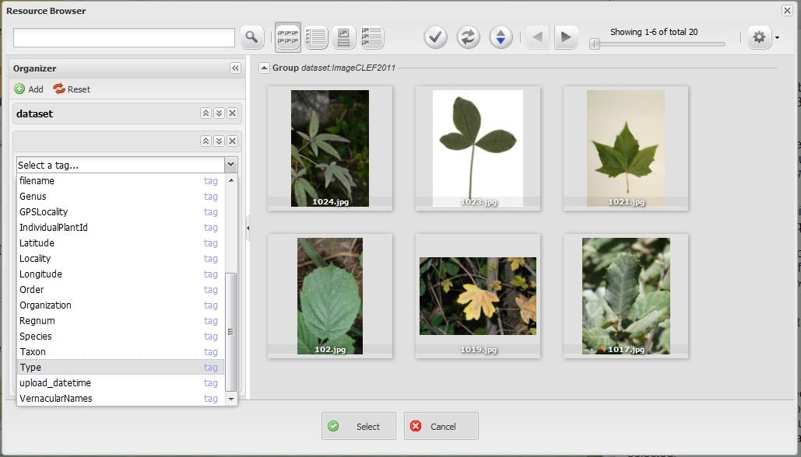
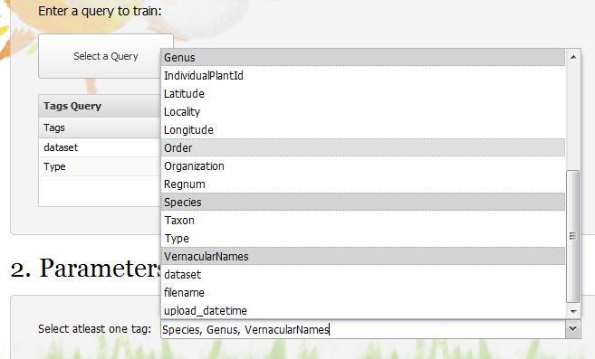

Botanicam: The Trainer is a module that trains support vector machine models of a dataset. The module can train two types of model. One is the Leaf descriptors which take scans of leaves and calculate descriptors from the shape and texture and the other is a bush descriptor that calculates texture descriptors from bushes. The output of this module is a zip file containing the model and a dictionary of all the tags used to classify the dataset. This file can be used by Botanicam 3: The Plant Recognizer as the model file.
How to Use:1. Click Select a Query to begin picking a query. The Resource Browser will appear.
2. Select a tag from the organizer and then select a value you wish to query.
Note: More tags can be added to the query if you select the add button. 3. Click Select once you are finished slection all the tags you wish to query.
4. Now select a tag from the scroll down menu bar. These tags will classify the images you have choosen.
Note: You can select one or more of these tags. 5. Once you have finished selecting tags select one of the classifier methods.
6. Finally to run the module click Run. Make sure that you have selected the correct data and parameters. The module can take from a few minutes to a few hours depending on the dataset selected.